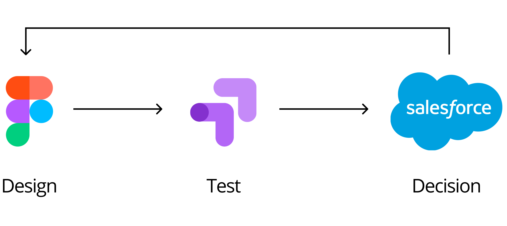

The global pandemic has accelerated digital transformation in Sherwin Williams and pushed the business to reach its customer in a never-happened way. Virtual color consultation is a new service for those DIYers to find the color they want and for Sherwin to find growth through digital channels. This service serves 80% of first-time customers, and their average order value is twice as many others.
Steve Swidarski - Product Owner
Katie Sloma - Creative Director
Yuanyuan Hu - Experience Designer
Alex Esposito - Copy Writer
Ben Daugherty - Business Analyst
Sherwin-Williams provides 3000+ colors that you can choose from. That's awesome but also are way too many options for a single person to choose from. We deeply understood DIYers' need for color guidance and provides many self-service color tools under the Color Snap brand. However, the human-to-human interaction is always warmer and more efficient that we never want to lose.
These days, people cannot walk directly into Sherwin store and talk to our store members as usual, but they still need to be able to connect with an expert on their terms who can guide them in translating what’s “in their head,” validating their choices and helping them “see it” in their space so they can make a final color decision. It becomes extremely important for us to connect with our customers online.
Beyond just helping choose color, DIYers usually do the project for the first time. Inspiration, color samples, comparing products - there is a lot that our consultant can do. Through this project, we provide a best-in-class virtual color and paint consultation experience that helps DIYers choose paint for their projects because extending S-W’s trademark expertise and personalized support beyond the store can inspire more people to tackle their projects with S-W.
In order to quickly hit the market, we have little time to do the research, so we decided to have a co-creation workshop with DIYers, color consultants, and other Sherwin employees to understand the needs, goals, and constraints. Since that workshop, we got clearer what an ideal experience should be, but the goal should be achieved step by step.
For the first release, we used a few out-of-shelf solutions like Microsoft Booking, Teams, and Sherwin Color Visualizer. That definitely isn't the "ideal states" from a UX perspective, but from the business perspective, the real goal of this release is to meet customers as soon as we can and to see how they will react. A few months later we already knew how much the customers love the service. The success encourages Sherwin to invest more, bring the service to a larger scale, and take the whole experience to the next level.
Without needing to log in, the user just needs to fill the request form on the VCC landing page.
Email sent to the user for scheduling and for gathering project information.
According to users' needs, the consultant will recommend colors and send follow-up emails using templates.
I found that users can easily understand what virtual color consultation is and what they want to do on this landing page is to submit their requests. So I chose the option with higher information density. Users don't need to scroll down to know what they can do but understand at the first glance. I also broke the form into two steps - contact information and project information, so that users will not be overwhelmed by the text fields they need to finish.
Helping people choose the right color is important, equally important is to keep the connection and to offer more. So I designed the simple login modal. Using the information they already filled in, just add one more step to set up the password. I referred to the existing login page and redesigned that with our new DIY language while fixing some existing usability issues.

The quick launch helped us learn a lot especially how much people love this new service, so we want to scale this success. I have been researching and designing the consultant and admin experience. We will automate most manual work for the consultants, build the data pipeline for real-time scheduling and lead generation. For DIYers, they can get consultation right away, play with color in the project space, go back to their consultant, and buy products in one click.
In this project, I got the experience of working on a large-scale service, that is backed by hundreds of consultants. It amazed me that how much can a consultant provide during a 30 minutes consultation. As a designer, I constantly consider what their talent is and what we can optimize, so we can provide the right tools that facilitate human-to-human interactions and help customers achieve their goals, and build trust for our brand.
Real-time scheduling is the capabilities we envisioned from day one. It will drastically shorten customers' waiting time, relieve the admin's from manual assigning work, enable the service to expand to a larger scale, save consultants time in logistics... However, that means investment and internal workflow shifts.
With the great success from the last release, our efforts demonstrate the value, and most importantly many stakeholders' hard work. real-time scheduling and project integration is coming true!